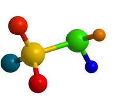

Todo lo que necesitas saber sobre estos compuestos químicos
Descubre las características, propiedades y aplicaciones de estos compuestos esenciales en química.
Las amidas son compuestos orgánicos que contienen un grupo carbonilo unido a un grupo amino (RCONH₂).
Los nitrilos contienen un grupo cianuro (-CN) unido a un átomo de carbono, y son importantes en la síntesis de polímeros.
Prueba tus conocimientos con este test interactivo sobre amidas y nitrilos:
Las aminas y los nitrilos son compuestos orgánicos que contienen nitrógeno, pero se diferencian en su estructura. Las aminas tienen un grupo amino (-NH2) unido a un carbono, mientras que los nitrilos contienen un grupo ciano (-C≡N). Esta diferencia en los grupos funcionales da a cada compuesto propiedades y usos únicos.
• Aminas: Son importantes en productos como cosméticos y desinfectantes. Algunas aminas también se encuentran en neurotransmisores, lo que las hace esenciales para funciones en el cuerpo humano.
• Nitrilos: Se utilizan en la fabricación de plásticos, solventes y ciertos medicamentos. Algunos productos industriales contienen nitrilos por su capacidad para resistir la degradación.